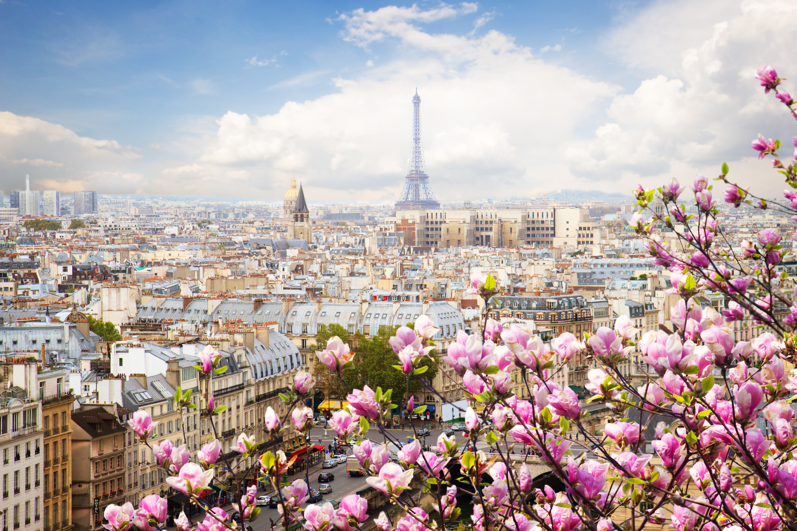
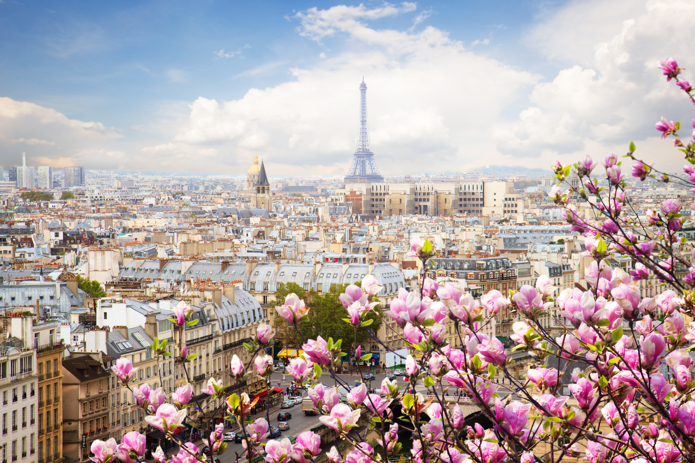

Destinos
Bora Bora


Bora Bora es una pequeña isla del Pacífico Sur al noroeste de Tahití en la Polinesia Francesa. Rodeada de motus (islotes) con orillas de arena y una laguna turquesa protegida por un arrecife de coral, es conocida por el buceo. También es un popular complejo turístico lujoso donde algunos bungalós se ubican sobre pilotes en el agua. En el centro de la isla, se eleva el monte Otemanu, un volcán inactivo de 727 m.
Paris
 

París, la capital de Francia, es una importante ciudad europea y un centro mundial del arte, la moda, la gastronomía y la cultura. Su paisaje urbano del siglo XIX está entrecruzado por amplios bulevares y el río Sena. Aparte de estos hitos, como la Torre Eiffel y la catedral gótica de Notre Dame del siglo XII, la ciudad es famosa por su cultura del café y las tiendas de moda de diseñador a lo largo de la calle Rue du Faubourg Saint-Honoré.